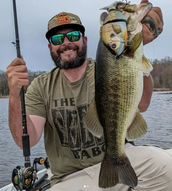
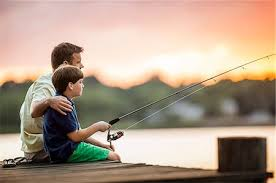

Apparel
Fishing Gear
Homepage
Join the Club
Apparel
Fishing Gear
Homepage
Join the Club


This is our company's story according to Devun Durst. It started about 15 years ago when my dad, Anthony Durst, began fishing as a hobby that he really enjoyed. His passion for fishing was further enhanced when he received a free boat, and he would often spend his Saturdays out on the water, clearing his mind after a busy week of providing for our family. Soon, he found himself surrounded by a community of friends who shared his passion, and together they developed an idea to enter the fishing market and start their own brand. My father started his Instagram page with no followers, but over the past few years, he has grown the company to 13.9k followers. He has also released custom shirts, partnered with other swimbaits, and hosted numerous tournaments. However, the company is still growing and currently lacks a website. As his son, I am creating a webpage for the brand. Although things may change, our love and passion for bringing the fishing community together to enjoy our brand remains the same.
The Importance of community
At B.A.B.C., Our consumers are the foundation of our business. We understand that recreational fishing is more than just a hobby; it is a way of life and a cherished pastime for many people. That is why we are dedicated to providing our consumers with exceptional service and unforgettable experiences on the water. By listening to our customers, we can tailor our services to their needs and ensure that their expectations are not just met but exceeded. Our customers are also the reason we are able to continue growing our business and expanding our reach, allowing more people to experience the joys of recreational fishing. Finally, our customers inspire us to continue exploring new and exciting ways to provide them with the ultimate fishing adventure.
 